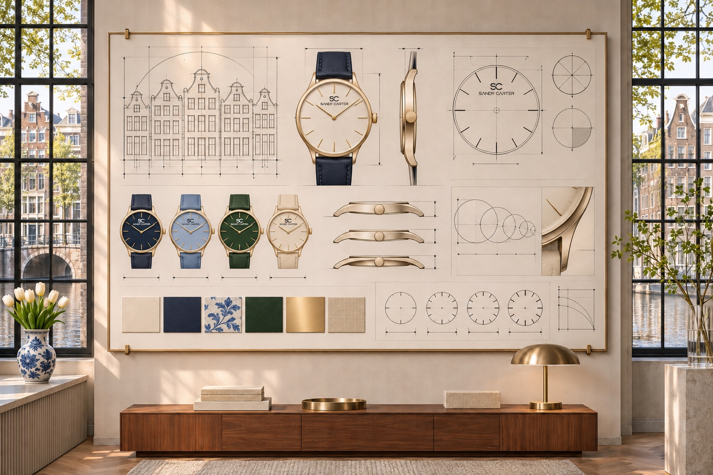

The dial: information and identity
A dial carries time information, but it also creates the first impression. Markers, numerals, hands, sub-dials and date windows need a clear hierarchy. Strong legibility does not prevent expression; colour, texture and typography can create character while preserving calm.
Negative space is an active design tool. It separates information and lets important details breathe. Minimalist watch design depends on especially precise spacing because every remaining element becomes more visible.
The case: proportion in three dimensions
Case diameter is only one measurement. Thickness, lug length, bezel width, crown size and the shape of the case back all influence visual balance and comfort. Two watches with the same diameter can wear very differently.
The relationship between case and dial also changes perceived size. A narrow bezel can make a dial feel expansive; a stronger bezel adds structure and visual weight.
Finishing: how surfaces respond to light
Polished surfaces create sharp reflections and a more formal character. Brushed finishes soften reflections and can make daily wear feel more natural. Combining finishes can define edges and separate components, but only when transitions are controlled.
Judge the whole composition
No single feature makes a watch successful. The dial, case and finishing must work with the bracelet or strap, and the technical specification must support the intended use. Final SANDY D CARTER product pages will show multiple angles and verified details so these relationships can be evaluated clearly.
